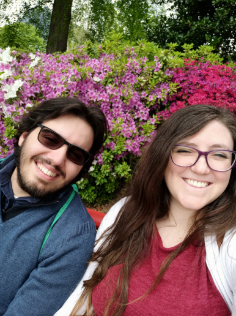

Samuele Giovanni Leoni
Hello everyone! My name is Samuele Leoni, I'm 25 years old and live in Milan, Italy.
I love technology since I was a child, it's something I inherited from my father, he also is kind of a tech
enthusiast.
My hobbies are reading manga, playing videogames with friends and family, listening to music and watching
movies/series.
I also enjoy playing guitar from time to time.
I currently work as a software developer at a small company who creates and produces a variety of industrial
sensors.
Although I love my job I would like to do some experience abroad and that's also another reason why I am
pursuing my education here at BYU-Idaho Online.
About what I love about this program is that I can still pursue my education while working full-time which
is
the
most important thing for me because otherwise I couldn't afford studying.
I really love the Hymn "Come, Come, Ye Saints" it always give me strength and courage to persevere and
follow
my
dreams.
Thank you for reading my little introduction to myself I hope to know you all better and that we can
successfully
overcome every difficulty we may find in this or in future courses but also in our whole lives.